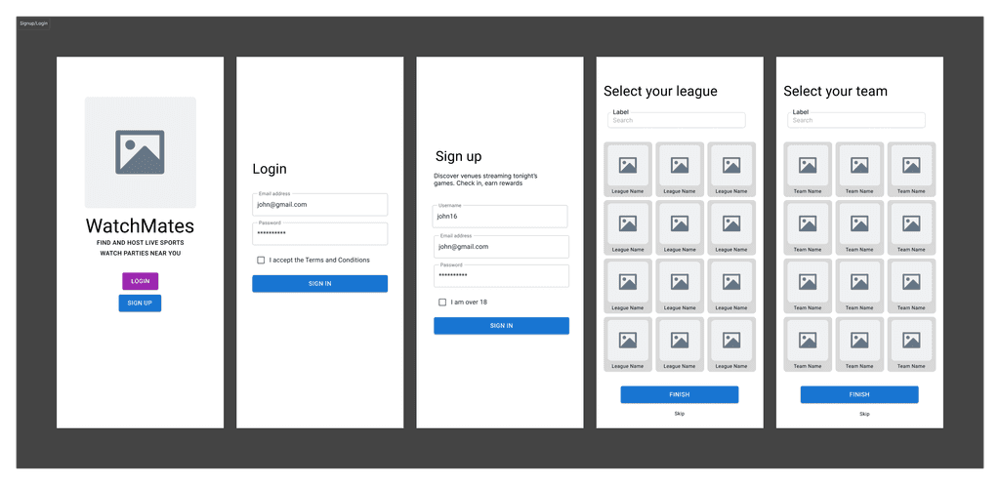
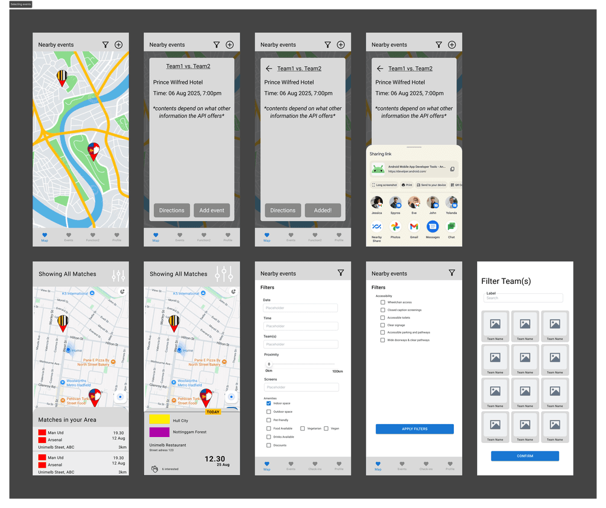
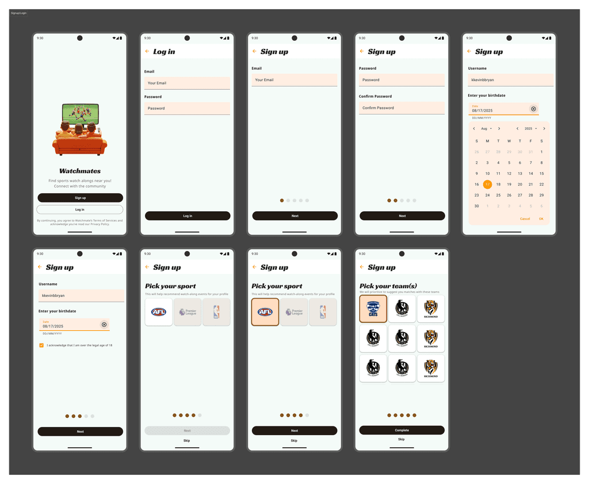
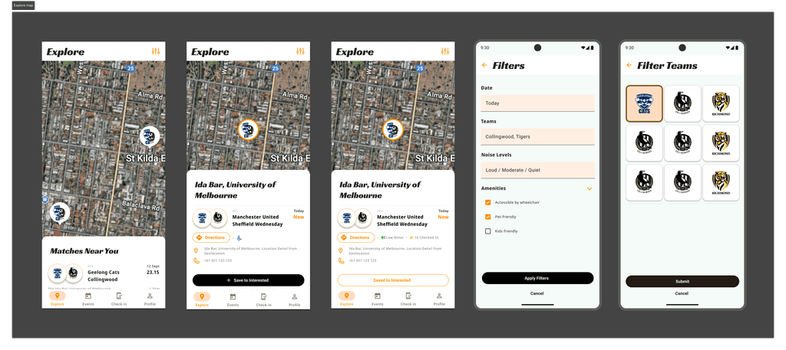
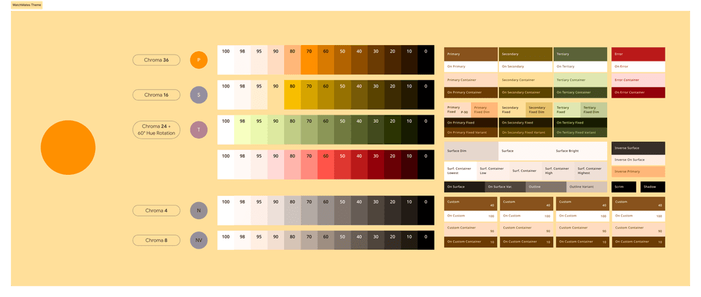
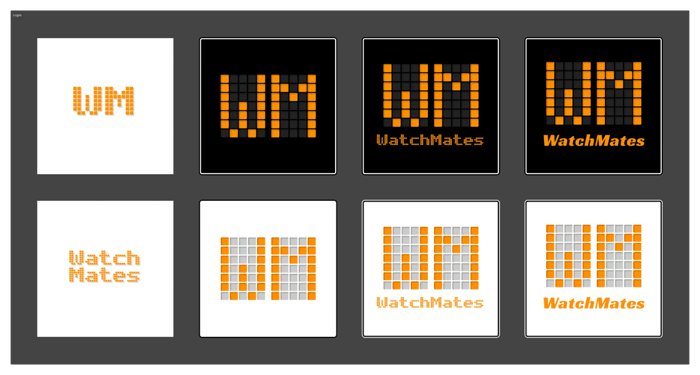

Problem
We were challenged to create an Android application that utilised as many smartphone sensors as possible.
Case Study
Connecting sports fan together via live watch parties.
We were challenged to create an Android application that utilised as many smartphone sensors as possible.
Starting out with an idea, we progresed through low- and high-fidelity prototyping before proceeding with full implementation on Android studio.
Created a fully-fledged sports entertainment app connecting users and businesses together using live watch-along parties.
The problem was straightforward: create an Android application that utilised as many smartphone sensors as possible. We went through multiple rounds of brainstorming before ultimately coming up with an idea about hosting live watch events for sports.
We outlined three goals that our app needs to accomplish:
We present our solution to the problen: WatchMates.
Here is a breakdown that details the app's function:
When setting out to create WatchMates, we first came up with potential features for the app. This came in the form of use case diagrams that outlined all the functions that our app should provide.
These were then converted into user stories, helping us compartmentalise the app into distinct sections:

Afterwards, wireframes were used to establish:
This phase helped the team agree on the project's scope and to prioritise core features before development began.


We then proceeded into high-fidelity screens in Figma, guided by Material Design 3 principles. My focus was on:


Utilising Material Design 3 helped to ensure platform familiarity and usability. This allows users to navigate the app using interaction patterns they are already familiar with, according to typical Android conventions. We decided on this orange-centric colour scheme as we felt that it best reflected the sporty nature of the app.

I also created the app logo through multiple iterations, aiming to match the overall aesthetic and branding of the app as outlined in the Material theme.

The conclusion of the project made me achieve a lot:
This project helped me to:
Overall, I really enjoyed the experience of producing something tangible using the end-to-end design process. This cemented the realisation that I enjoy working in diverse teams and it improved my confidence regarding communicating with others and getting my ideas across the group.